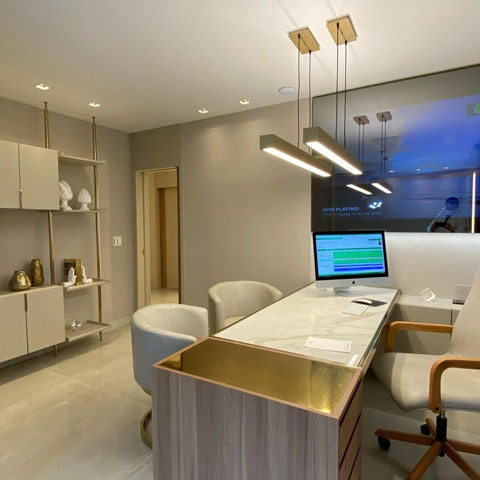

Saiba mais sobre a nossa Clínica
Inaugurada em 2022, a Clínica Agapanto Dermatologia proporciona excelência nos serviços prestados prezando valores como ética e competência, o que garante índices elevados de satisfação de nossos pacientes. A Clínica tem o conceito de integrar saúde, beleza e bem estar, melhorando assim a autoestima e a qualidade de vida de quem nos procura.
A Clínica Agapanto Dermatologia atua na área da Dermatologia, abrangendo os cuidados e tratamentos para manter a pele saudável e jovial e evitar o desgaste natural do envelhecimento desse órgão.
Sob a supervisão médica da Dra. Marielly Cruz, dermatologista, a Clínica conta com uma equipe multidisciplinar, onde o médico e sua equipe estão atentos aos cuidados da pele e do corpo de seus pacientes.
A Clínica tem como filosofia de trabalho disponibilizar tratamentos de pele não invasivos e de alta tecnologia, reconhecidos no meio científico-acadêmico.
Saúde e tecnologia para seu Bem Estar.
